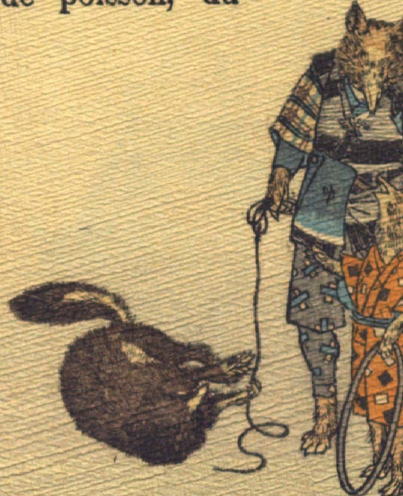

狸。前脚後脚を揃えて、地面に横になっている。その横に狐の親子が立っており、親狐は縄を持っている。
著作者：J.Dautremer／出典：親書誌：U426_nichibunken_0120：La victoire du petit renard／日付：2006／資源識別子：U426_nichibunken_0120_0004_0001
Copyright (c)2010- International Research Center for Japanese Studies, Kyoto, Japan. All rights reserved.